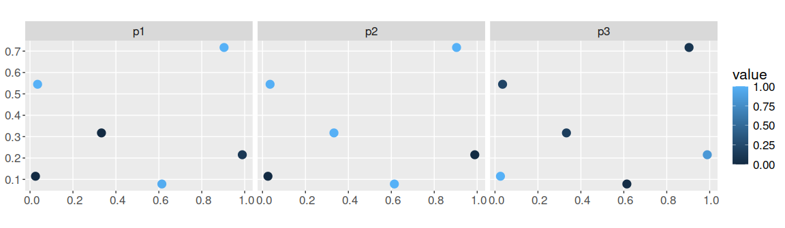

The surveyvoi package is a decision support tool for prioritizing sites for ecological surveys based on their potential to improve plans for conserving biodiversity (e.g. plans for establishing protected areas). Given a set of sites that could potentially be acquired for conservation management – wherein some sites have previously been surveyed and other sites have not – this package provides functionality to generate and evaluate plans for additional surveys. Specifically, plans for ecological surveys can be generated using various conventional approaches (e.g. maximizing expected species richness, geographic coverage, diversity of sampled environmental conditions) and by maximizing value of information. After generating plans for surveys, they can also be evaluated using value of information analysis. Please note that several functions depend on the ‘Gurobi’ optimization software (available from https://www.gurobi.com). Additionally, the JAGS software (available from https://mcmc-jags.sourceforge.io/) is required to fit hierarchical generalized linear models.
Installation
The development version can be installed from GitHub using the following code.
if (!require(remotes)) install.packages("remotes")
remotes::install_github("prioritizr/surveyvoi")Windows
The Rtools software needs to be installed to install the surveyvoi R package from source. This software provides system requirements from rwinlib.
Ubuntu
The gmp, fftw3, mpfr, and symphony libraries need to be installed to install the surveyvoi R package. Although the fftw3 and symphony libraries are not used directly, they are needed to successfully install dependencies. For recent versions of Ubuntu (18.04 and later), these libraries are available through official repositories. They can be installed using the following system commands:
apt-get -y update
apt-get install -y libgmp3-dev libfftw3-dev libmpfr-dev coinor-libsymphony-devLinux
For Unix-alikes, gmp (>= 4.2.3), mpfr (>= 3.0.0), fftw3 (>= 3.3), and symphony (>= 5.6.16) are required.
macOS
The gmp, fftw, mpfr, and symphony libraries are required. Although the fftw3 and symphony libraries are not used directly, they are needed to successfully install dependencies. The easiest way to install these libraries is using HomeBrew. After installing HomeBrew, these libraries can be installed using the following commands in the system terminal:
brew tap coin-or-tools/coinor
brew install symphony
brew install pkg-config
brew install gmp
brew install fftw
brew install mpfrCitation
Please cite the surveyvoi R package when using it in publications. To cite the developmental version, please use:
Hanson JO, Chadès I, Hudgins EJ, Bennett J (2022). surveyvoi: Survey Value of Information. R package version 1.0.3.10. Available at https://github.com/prioritizr/surveyvoi.
Usage
Here we provide a short example showing how to use the surveyvoi R package to prioritize funds for ecological surveys. In this example, we will generate plans for conducting ecological surveys (termed “survey schemes”) using simulated data for six sites and three conservation features (e.g. bird species). To start off, we will set the seed for the random number generator for reproducibility and load some R packages.
set.seed(500) # set RNG for reproducibility
library(surveyvoi) # package for value of information analysis
library(dplyr) # package for preparing data
library(tidyr) # package for preparing data
library(ggplot2) # package for plotting dataNow we will load some datasets that are distributed with the package. First, we will load the sim_sites object. This spatially explicit dataset (i.e. sf object) contains information on the sites within our study area. Critically, it contains (i) sites that have already been surveyed, (ii) candidate sites for additional surveys, (iii) sites that have already been protected, and (iv) candidate sites that could be protected in the future. Each row corresponds to a different site, and each column describes different properties associated with each site. In this table, the "management_cost" column indicates the cost of protecting each site; "survey_cost" column indicates the cost of conducting an ecological survey within each site; and "e1" and "e2" columns contain environmental data for each site (not used in this example). The remaining columns describe the existing survey data and the spatial distribution of the features across the sites. The "n1", "n2", and "n3" columns indicate the number of surveys conducted within each site that looked for each of the three features (respectively); and "f1", "f2", and "f3" columns describe the proportion of surveys within each site that looked for each feature where the feature was detected (respectively). For example, if "n1" has a value of 2 and "f1" has a value of 0.5 for a given site, then the feature "f1" was detected in only one of the two surveys conducted in this site that looked for the feature. Finally, the "p1", "p2", and "p3" columns contain modeled probability estimates of each species being present in each site (see fit_hglm_occupancy_models() and fit_xgb_occupancy_models() to generate such estimates for your own data).
## Simple feature collection with 6 features and 13 fields
## Geometry type: POINT
## Dimension: XY
## Bounding box: xmin: 0.10513 ymin: 0.04556193 xmax: 0.9764926 ymax: 0.8637977
## CRS: NA
## # A tibble: 6 × 14
## survey_cost management_cost f1 f2 f3 n1 n2 n3 e1 e2
## <dbl> <dbl> <dbl> <dbl> <dbl> <dbl> <dbl> <dbl> <dbl> <dbl>
## 1 14 102 1 1 1 3 3 3 1.00 -0.848
## 2 25 90 0 0 0 0 0 0 -1.44 1.27
## 3 25 165 1 0.6 0 5 5 5 1.25 0.817
## 4 17 104 0 0 0 0 0 0 -0.484 -0.292
## 5 18 100 0 0 0 0 0 0 0.0135 0.380
## 6 15 94 0 0 0 0 0 0 -0.347 -1.33
## p1 p2 p3 geometry
## <dbl> <dbl> <dbl> <POINT>
## 1 1 0.999 0.789 (0.1589075 0.8637977)
## 2 0 0 0.112 (0.9764926 0.7485368)
## 3 1 0.419 0.012 (0.8362375 0.2282762)
## 4 0.022 0.502 0.834 (0.10513 0.179855)
## 5 0.318 0.13 0.225 (0.5985786 0.04556193)
## 6 0.474 0.997 0.991 (0.1504241 0.6821156)
# plot cost of protecting each site
ggplot(sim_sites) +
geom_sf(aes(color = management_cost), size = 4) +
ggtitle("management_cost") +
theme(legend.title = element_blank())
# plot cost of conducting an additional survey in each site
# note that these costs are much lower than the protection costs
ggplot(sim_sites) +
geom_sf(aes(color = survey_cost), size = 4) +
ggtitle("survey_cost") +
theme(legend.title = element_blank())
# plot survey data
## n1, n2, n3: number of surveys in each site that looked for each feature
sim_sites %>%
select(n1, n2, n3) %>%
gather(name, value, -geometry) %>%
ggplot() +
geom_sf(aes(color = value), size = 4) +
facet_wrap(~name, nrow = 1)
# plot survey results
## f1, f2, f3: proportion of surveys in each site that looked for each feature
## that detected the feature
sim_sites %>%
select(f1, f2, f3) %>%
gather(name, value, -geometry) %>%
ggplot() +
geom_sf(aes(color = value), size = 4) +
facet_wrap(~name, nrow = 1) +
scale_color_continuous(limits = c(0, 1))
# plot modeled probability of occupancy data
sim_sites %>%
select(p1, p2, p3) %>%
gather(name, value, -geometry) %>%
ggplot() +
geom_sf(aes(color = value), size = 4) +
facet_wrap(~name, nrow = 1) +
scale_color_continuous(limits = c(0, 1))
Next, we will load the sim_features object. This table contains information on the conservation features (e.g. species). Specifically, each row corresponds to a different feature, and each column contains information associated with the features. In this table, the "name" column contains the name of each feature; "survey" column indicates whether future surveys would look for this species; "survey_sensitivity" and "survey_specificity" columns denote the sensitivity (true positive rate) and specificity (true negative rate) for the survey methodology for correctly detecting the feature; "model_sensitivity" and "model_specificity" columns denote the sensitivity (true positive rate) and specificity (true negative rate) for the species distribution models fitted for each feature; and "target" column denotes the required number of protected sites for each feature (termed “representation target”, each feature has a target of 1 site).
## # A tibble: 3 × 7
## name survey survey_sensitivity survey_specificity model_sensitivity
## <chr> <lgl> <dbl> <dbl> <dbl>
## 1 f1 TRUE 0.954 0.886 0.718
## 2 f2 TRUE 0.974 0.875 0.705
## 3 f3 TRUE 0.956 0.823 0.768
## model_specificity target
## <dbl> <dbl>
## 1 0.811 1
## 2 0.860 1
## 3 0.887 1After loading the data, we will now generate an optimized ecological survey scheme. To achieve this, we will use approx_optimal_survey_scheme() function. This function uses a greedy heuristic algorithm to maximize value of information. Although other functions can return solutions that are guaranteed to be optimal (i.e. optimal_survey_scheme()), they can take a very long time to complete because they use a brute-force approach. This function also uses an approximation routine to reduce computational burden.
To perform the optimization, we will set a total budget for (i) protecting sites and (ii) surveying sites. Although you might be hesitant to specify a budget, please recall that you would make very different plans depending on available funds. For instance, if you have near infinite funds then you wouldn’t bother conducting any surveys and simply protect everything. Similarly, if you had very limited funds, then you wouldn’t survey any sites to ensure that at least one site could be protected. Generally, conservation planning problems occur somewhere between these two extremes—but the optimization process can’t take that into account if you don’t specify a budget. For brevity, here we will set the total budget as 80% of the total costs for protecting sites.
# calculate budget
budget <- sum(0.8 * sim_sites$management_cost)
# generate optimized survey scheme
opt_scheme <-
approx_optimal_survey_scheme(
site_data = sim_sites,
feature_data = sim_features,
site_detection_columns = c("f1", "f2", "f3"),
site_n_surveys_columns = c("n1", "n2", "n3"),
site_probability_columns = c("p1", "p2", "p3"),
site_management_cost_column = "management_cost",
site_survey_cost_column = "survey_cost",
feature_survey_column = "survey",
feature_survey_sensitivity_column = "survey_sensitivity",
feature_survey_specificity_column = "survey_specificity",
feature_model_sensitivity_column = "model_sensitivity",
feature_model_specificity_column = "model_specificity",
feature_target_column = "target",
total_budget = budget,
survey_budget = budget,
verbose = TRUE)
# the opt_scheme object is a matrix that contains the survey schemes
# each column corresponds to a different site,
# and each row corresponds to a different solution
# in the event that there are multiple near-optimal survey schemes, then this
# matrix will have multiple rows
print(str(opt_scheme))## logi [1, 1:6] FALSE FALSE FALSE FALSE FALSE FALSE
## - attr(*, "ev")= num [1, 1:100] 3 3 3 3 3 ...
## NULL
# let's add the first solution (row) in opt_scheme to the site data to plot it
sim_sites$scheme <- c(opt_scheme[1, ])
# plot scheme
# TRUE = selected for an additional ecological survey
# FALSE = not selected
ggplot(sim_sites) +
geom_sf(aes(color = scheme), size = 4) +
ggtitle("scheme") +
theme(legend.title = element_blank())
This has just been a taster of the surveyvoi R package. In addition to this functionality, it can be used to evaluate survey schemes using value of information analysis. Furthermore, it can be used to generate survey schemes using conventional approaches (e.g. sampling environmental gradients, and selecting places with highly uncertain information). For more information, see the package vignette.
Getting help
If you have any questions about using the surveyvoi R package or suggestions for improving it, please file an issue at the package’s online code repository.